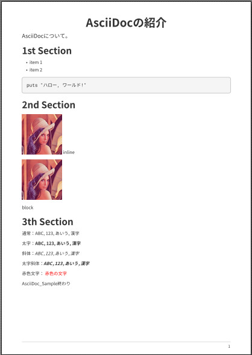

PDFの出力において、フォントを変えたくなることがあります。現在、「asciidoctor-pdf」が対応しているフォントは、TrueTypeフォント（ttfファイル）とOpenTypeフォント（otfファイル）です。
ここでは、フリーで手に入る以下のフォントについて簡単に説明します
- 懐源ゴシック
- フリーのフォントである「源ノ角ゴシック」を、TrueType形式に変換した派生フォントです。
- asciicoctor-pdf用に作成されたようです。
- かな漢字の斜体が使用可能です！
- こちらからttfファイルをダウンロードすることが可能です。
- 「Sorry, This gem is no longer maintained, I suggest follow the asciidoctor-pdf theme guides to use your local font.」となったようです。
- 源真ゴシック
- フリーのフォントである「源ノ角ゴシック」を、TrueType形式に変換した派生フォントです。
- プロポーショナルフォントや等幅フォントがあります。
- こちらからダウンロードします。7-zipもしくはzip形式でダウンロードし展開します。
- 源様明朝
- フリーのフォントである「源ノ明朝」を、TrueType形式に変換した派生フォントです。
- こちらからダウンロードしてください。
- M+ FONTS
- 森下浩司さんによってデザインされたゴシック体の日本語フォントです。
- フリーソフトウェアであり、さらに利用・改変・再配布についてほぼ制限の無いライセンスが適用されていて、派生フォントが多数配布されています。
- こちらからダウンロードしてください。
- Ricty Diminished
- プログラミング用フォントです。等幅フォントです。
- かな漢字の斜体が使用可能です！
- Rictyというフォントの姉妹フォントで、IPA ゴシックのグリフを含まないため、使用可能な漢字グリフの数が少ない代わり、SIL Open Font License の下で配布が可能です。
- こちらからダウンロードしてください。
「源ノ角ゴシック」と「源ノ明朝」は、AdobeがGoogleと共同で開発した美しく汎用性に優れたオープンソースなフォントです。非常に有用なフォントです。公式で提供されているのはOpenTypeフォーマットです。
以下に、TrueTypeフォント（ttfファイル）の「フォントのインストール方法」、「スタイルファイルの設定方法」を簡単に説明します。
フォントのインストール方法
必要なフォント（ttfファイル）をダウンロードします。
Rubyは「\lib\ruby\gems\[バージョン番号]\gems\」にライブラリがインストールされます。「asciidoctor-pdf」ライブラリのフォルダ下の「\data\fonts」にフォントをコピーしてください。
- 懐源ゴシック：「KaiGenGothicJP-*.ttf」
- 源真ゴシック：「GenShinGothic-*.ttf」、「GenShinGothic-P-*.ttf」、「GenShinGothic-Monospace-*.ttf」
- 源様明朝：「GenYoMinJP-*.ttf」
- M+ FONTS：「mplus-1*.ttf」
- Ricty Diminished：「RictyDiminished-*.ttf」
スタイルファイルの設定
「asciidoctor-pdf」では、スタイルファイル(ymlファイル)でフォントの設定などを行います。
ここでは「懐源ゴシック」がインストールされているとします。「my-theme.yml」作成します。
「font:」セクションを以下のようにします。
extends: default
font:
catalog:
merge: true
KaiGen Gothic JP:
normal: GEM_FONTS_DIR/KaiGenGothicJP-Regular.ttf
bold: GEM_FONTS_DIR/KaiGenGothicJP-Bold.ttf
italic: GEM_FONTS_DIR/KaiGenGothicJP-Regular-Italic.ttf
bold_italic: GEM_FONTS_DIR/KaiGenGothicJP-Bold-Italic.ttf
M+1p Fallback: GEM_FONTS_DIR/mplus1p-regular-fallback.ttf
Noto Emoji: GEM_FONTS_DIR/notoemoji-subset.ttf
fallbacks: [M+1p Fallback, Noto Emoji]
base:
font_family: KaiGen Gothic JPextends: defaultは、デフォルトの設定ファイル「default-theme.yml」を拡張することを指示しています。（参考）
「default-theme.yml」は、「asciidoctor-pdf」ライブラリのフォルダ下の「\data\themes」にあります。
merge: true は、「default-theme.yml」で設定されたフォントを引き続き使用することを指示しています。（参考）
KaiGen Gothic JP:
normal: GEM_FONTS_DIR/KaiGenGothicJP-Regular.ttf
bold: GEM_FONTS_DIR/KaiGenGothicJP-Bold.ttf
italic: GEM_FONTS_DIR/KaiGenGothicJP-Regular-Italic.ttf
bold_italic: GEM_FONTS_DIR/KaiGenGothicJP-Bold-Italic.ttfは、「懐源ゴシック」のフォントファイルを指定しています。
base:
font_family: KaiGen Gothic JPは、本文のフォントを「懐源ゴシック」に設定しています。
他にもfallbacksの設定を文字化け防止として行っています。この設定は、「default-with-font-fallbacks-theme.yml」を参考にしています。
「my-theme.yml」は、今回の例ではAsciiDocファイルと同じフォルダに設置します。AsciiDocファイルの属性で以下のように記述します。
:imagesdir: ./img
:pdf-themesdir: ./出力結果の例

こちらにサンプルをおいておきます。
ちなみに
AsciiDocファイルの属性で以下のように設定すれば、所望のフォルダのフォントを参照することができます。たくさんのフォントをインストールする場合には便利かもしれません。
:pdf-fontsdir: c:/Fontsただし、指定したフォルダのみの参照になります。
つまり、「asciidoctor-pdf」ライブラリのフォルダ下の「data\fonts」に、標準でインストールされているフォントがあります。「asciidoctor-pdf-2.1.5」においては、「mplus1mn-*.ttf」と「notoserif-*.ttf」などです。これらのフォントもコピー指定したフォルダにコピーしてください。
注意してください。